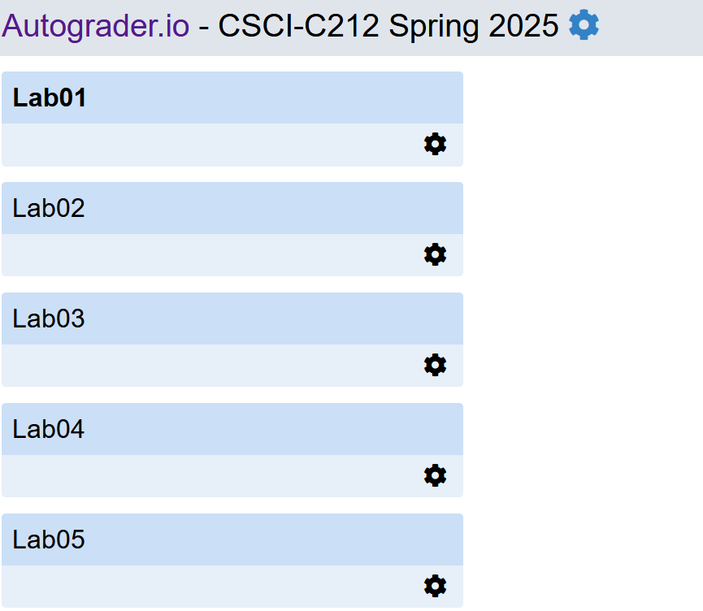

# Join our Discord server! Keep up with announcements and ask questions:  <br />`https://discord.gg/hmdmpQE5J3` Go to the `#greetings` channel and select what class you are coming from. Introduce yourself in `#introductions`! --- # Familiarize yourself with the autograder!  <br /><code style="font-size: 20px">https://autograder.luddy.indiana.edu/web/course/136</code> Go to it and make sure that you have access. If not, see me after class. You will need it for lab tomorrow/Friday! --- # Download our IDE: IntelliJ <img src="intellij.png" style="width:300px;" /> <br /><code style="font-size: 20px">https://www.jetbrains.com/idea/download</code> Download the *community edition* and not the *ultimate*. You will do this in lab, but it's a good idea to get started now. --- # Bookmark the public course webpage.  <br /><code style="font-size: 20px">https://joshuacrotts.us/teaching/c212-s25.html</code> Everything is available in the Canvas modules, but it all (psets, labs, exams) hyperlinks to this page. --- # Today's Agenda: - Testing, more Java basics. --- # Reminder: take the pretest! - Take the pretest quiz in Canvas! - Not for a grade; just do your best. - Complete by TONIGHT; required to access the rest of the course. --- # Reading - Read §1.2 and §2.1 in the textbook before next class. --- # Office hours started on Monday! - TA office hours are ALWAYS in Room 0121. (Computer lab on the first floor.) - Go meet some of your TAs; check the schedule on Canvas. - Pizza tonight! Go and get started on PSet1! <img src="pepperoni-pizza-slice.png" style="width:300px;" /> --- # Problem Set 1 is out! - Start working on it! - Covers chapters 1.1-1.4 and 2.1 in the textbook. - Do not wait until the last minute! --- # Some advice from past C212 students... <img src="testimonials/Most Important Thing 1-merged_Page_10.png" style="width:100%; height:200px" /> --- # Some advice from past C212 students... <img src="testimonials/Most Important Thing 1-merged_Page_11.png" style="width:100%; height:400px" /> --- # Some advice from past C212 students... <img src="testimonials/Most Important Thing 1-merged_Page_16.png" style="width:100%; height:250px" />